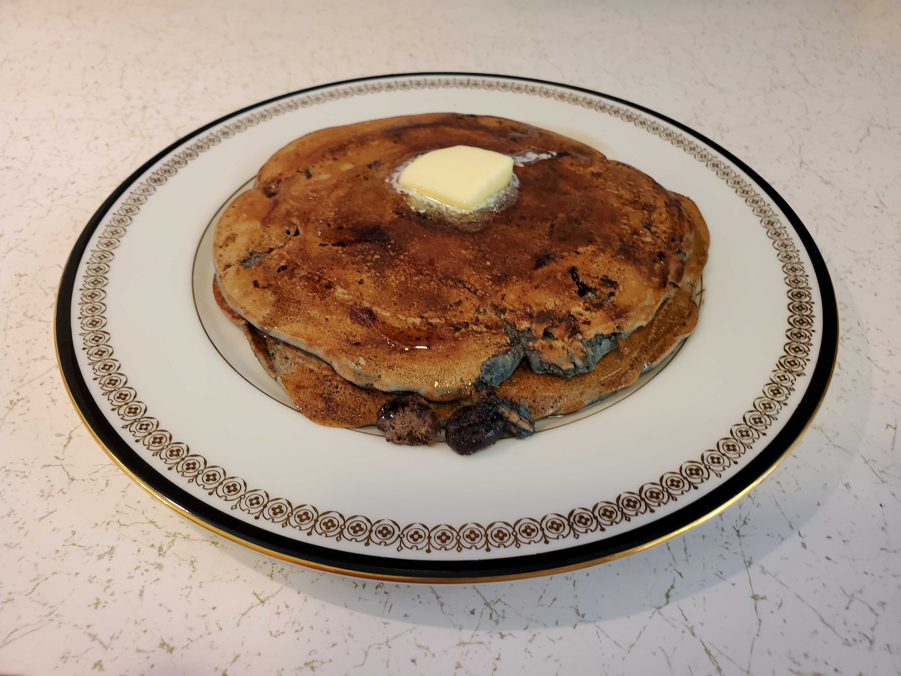

This is a recipe for "Jon's Made From Scratch Pancakes"
Ingredients (6 plate-size pancakes)
- 1 large egg at room temperature.
- 1/2 stick of butter melted.
- 1/2 cup of milk at room temperature.
- 2 cups of all-purpose flour sifted.
- 2 tbsp. of sugar.
- 1 tbsp. of pure baking powder.
- 1/2 tsp. of salt.
- 1/2 cup of blueberries at room temperature (optional).
Directions
- Beat the egg, butter, and milk lightly in a mixing bowl.
- Mix in the other ingredients. If the batter seems too thick, slowly mix in more milk until creamy, NOT watery.
- Let the batter cure for 5 minutes.
- Heat a frying pan until drops of cold water dance. Then butter the frying pan.
- Fry the pancakes.
- Enjoy.
Download Recipe